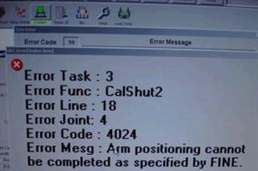

Service History
Subject: NS-7080 Error 4024 Arm positioning cannot be completed as specified by FINE
Handler Model: SDT NS-7080
Controller: RC520
Date: 9 April 2009
Symptom
Found problem at EPH#25 when use Auto Contact Height calibration function (RETRY + START) at arm2
After arm 1 can pick up device in shuttle then arm2 move to shuttle2 and move down for pick up device.
This error occurs when arm2 move down for pickup device, Please see error picture as below.

Action
Questions:
1) Problem occur before move down or after start move?
2) If problem happen after start move down, did it touch shuttle and problem happen or move midway error happen?
3) Can you please send me P50 and P51 data? Please tell me the P50 and P51 values.
4) If just START button, any problem?
5) Handler running production and conversion now? Or have problem before this?
If I not wrong, arm 2 not move and error happen? Please let me know more details.
Problem already solve by increase pick up point of Index Arm2 at Input Shuttle2 (from 35mm to 50mm).
M/C can high calibration as normal
Now M/C can run.
Cause